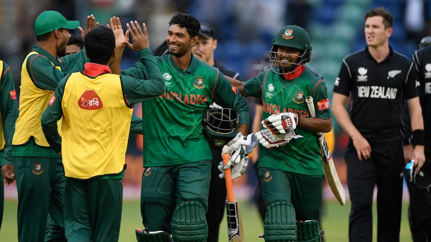
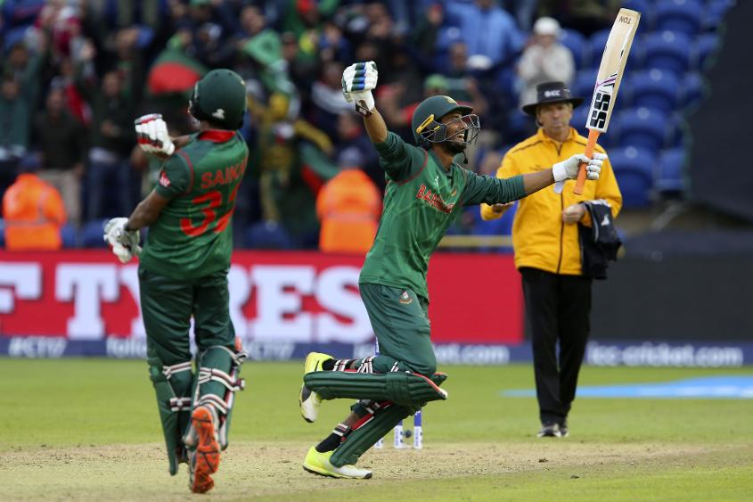

Exclusive Column - Habibul Bashar
Exclusive Column - Habibul Bashar
Bangladesh's greatest opportunity to emerge from the shadows
This is a great opportunity for Bangladesh to emerge from the shadows and establish itself as a serious contender for higher honours, and that is how it must approach the semi-final
As Bangladesh braces for the biggest match of its cricketing journey, the one question it must ask itself is this – is it merely satisfied that it has finally made the semi-final of an ICC event, or does it have the hunger and the desire to go a step further?
Knowing the team and the pride it has in its performances, the answer is fairly straightforward. While it can be justifiably happy at the fact that it is in the semi-final of the ICC Champions Trophy 2017, the team will not be content to rest on its laurels. This is a great opportunity for Bangladesh to emerge from the shadows and establish itself as a serious contender for higher honours, and that is how it must and will approach the semi-final against India at Edgbaston on Thursday.
The last couple of years have seen Bangladesh’s stock climb exponentially, starting from its quarter-final appearance in the ICC Cricket World Cup 2015. That run has since mushroomed into several excellent limited-overs results, mainly on home turf, as well as a maiden Test victory over England, also at home.
Cardiff Wales Stadium, Cardiff
HEAD-TO-HEAD81 matches; England 49 wins; Pakistan 30 wins; no result 2.
Bangladesh has also made the finals of the Asia Cup in both the 50-over and T20 formats, and while those are all wonderful achievements, I think this semi-final berth in the ICC Champions Trophy 2017, where the top eight teams in the world are in attendance, must rank at the top of the list.
At the start of the tournament, few would have given Bangladesh a chance of making it to the knockouts, and perhaps justifiably so.
Bangladesh was clubbed in the more competitive Group A alongside England, Australia and New Zealand, all of whom have had fairly good results in such competitions. But, such is the beauty of cricket that reputation and pedigree count for only so much. At the end of the day, what matters is what kind of cricket you play out in the middle, and Bangladesh played excellent cricket against New Zealand, which is why it now finds itself within one win of a place in the final.